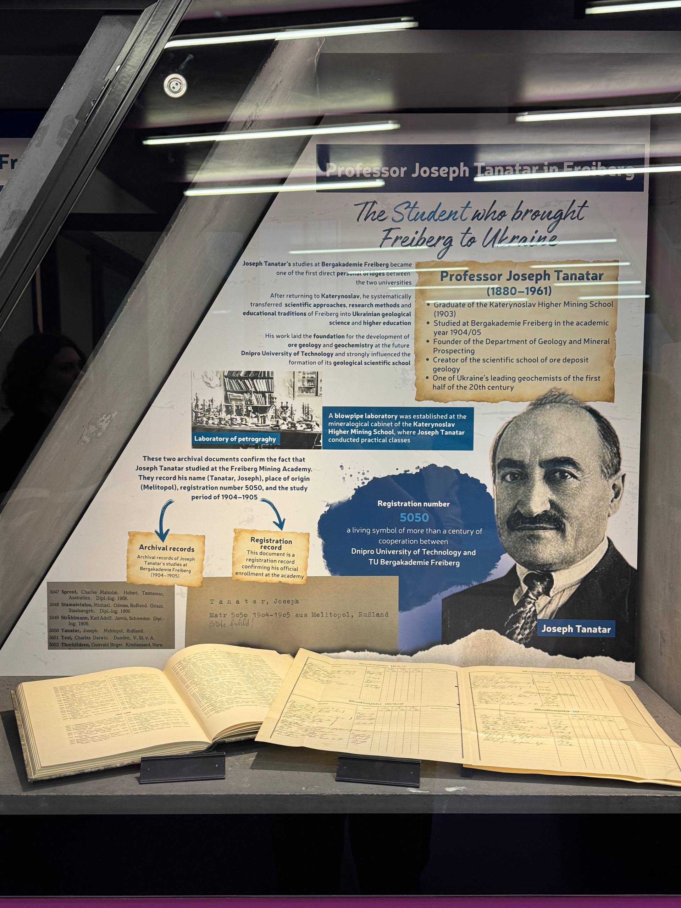

The second stage introduces the person whose story inspired the name of our entire project – Professor Joseph Tanatar. Joseph Tanatar was born in 1880 and became one of the most prominent Ukrainian geochemists of the first half of the twentieth century. He graduated from the Katerynoslav Higher Mining School in 1903. At that time, graduates who wanted to pursue an academic teaching career often needed additional university studies. One of the opportunities was to continue their education at foreign institutions, particularly in Germany. In the academic year 1904–1905, Joseph Tanatar studied at Bergakademie Freiberg. And here we come to the most important detail: his registration number was 5050.
This number was discovered in the historical archival records of the Freiberg Mining Academy. The documents identify Tanatar by name, his place of origin – Melitopol – and his period of study. These archival records provide direct documentary evidence of his connection with Freiberg. But the significance of this story goes far beyond one student's academic experience. After returning to Katerynoslav, Tanatar transferred the scientific approaches, research methods and educational traditions he had encountered in Freiberg into Ukrainian geological science. He became the founder of the Department of Geology and Mineral Prospecting at our university and established a scientific school specialising in the geology of ore deposits.
He also made an important contribution to the development of Ukrainian geochemistry and became a pioneer in the discovery of uranium ores in the Zhovta River area of the Dnipropetrovsk region. Therefore, we chose registration number 5050 as the name of our project because it represents a real historical connection between two academic institutions. For us, this archival number has become a symbol of how one person's educational journey can influence the development of science and create connections that last for generations. Joseph Tanatar was not simply a student in Freiberg. He became one of the people who brought Freiberg's scientific traditions to Ukraine.
Click on the photograph to enlarge it.